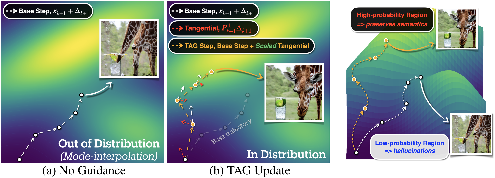
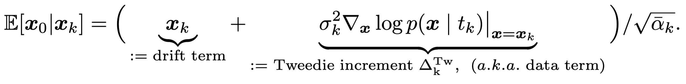

PDF
PDF

 Citation
Citation

Overview
Diffusion models often hallucinate by drifting off the data manifold. Tangential Amplifying Guidance (TAG) is a plug-and-play, architecture-agnostic inference method that amplifies the tangential component of each update while preserving the radial term, steering trajectories toward higher-density regions and improving fidelity without extra model evaluations.
Conceptual Visualization of TAG
While standard sampling produces hallucinations by drifting into low-probability areas, TAG guides the generation process toward high-probability regions, resulting in higher-quality samples.
Motivation
Our motivation stems from Tweedie's formula, which reveals that the score function, \(\Delta_x \log p(x\mid t_k)\), points toward high-probability data regions. Our goal is to emphasize this 'data term' without perturbing the scheduler's prescribed noise schedule.
What is implied by “Tangential”
(i.e., Data Term)?
We visualize each latent per timesteps. The original update \(\Delta_k:=\boldsymbol{x}_{k-1}-\boldsymbol{x}_{k}\) contains a mix of structural information and noise. We decompose this update into a normal component \(P_{k}\Delta_k\) and a tangential component \(P^{\perp}_{k}\Delta_k\). Normal component is largely unstructured and noisy, while Tangential component clearly preserves the primary semantic structure.

Visualization of Normal \(P_{k}\Delta_k\) and Tangential \(P^{\perp}_{k}\Delta_k\) Components. Tangential components contains rich semantic informations.
Toy Experiment
Without proper guidance, sampling trajectories drift off the data manifold, creating fragmented or OOD results. While common fixes like CFG can help,
they often oversimplify the geometry or leave stray artifacts. In contrast,
Sampling on a 2D branching distribution (Karras et al., 2024) under different guidance methods. TAG effectively steers sampling trajectories toward high-density regions along the branches, suppressing off-manifold outliers to achieve the highest similarity to the ground truth distribution.
Theorem
We prove that amplifying the tangential component monotonically increases the first-order Taylor gain of the log-likelihood, which effectively steers the sampling trajectory toward higher-density regions of the data manifold. Specifically:
(i) The first-order Taylor gain is a monotonically increasing function of the tangential amplification factor (η).The theorem shows that the derivative of the gain with respect to η is always non-negative. This mathematically confirms that increasing the tangential amplification consistently increases (or maintains) the movement toward high-probability regions.
(ii) The gain increment from a TAG step is always greater than or equal to that of a standard base step. The analysis explicitly shows that the difference in gain between a TAG-modified step and the base step is non-negative, with equality only holding if no amplification is applied (η=1). This guarantees that TAG provides a direct improvement in log-likelihood gain at each step of the sampling process.
Experimental results
We apply TAG at inference on pretrained backbones: Stable Diffusion v1.5 for the main experiments and Stable Diffusion 3 for flow matching. Unconditional results are reported on ImageNet-1K val; text-conditional results use MS-COCO 2014 val.
Unconditional Generation with SD 1.5
| Methods | Guidance Scale | TAG Amp. (η) | #NFEs | #Steps | FID ↓ | IS ↑ |
|---|---|---|---|---|---|---|
| DDIM (Song et al., 2020a) | – | – | 50 | 50 | 76.942 | 14.792 |
| DDIM + TAG | – | 1.05 | 50 | 50 | 67.971 | 16.620 |
| DDIM + TAG | – | 1.15 | 50 | 50 | 67.805 | 16.487 |
| DDIM + TAG | – | 1.25 | 50 | 50 | 71.801 | 15.815 |
| SAG (Hong et al., 2023) | 0.2 | – | 50 | 25 | 71.984 | 15.803 |
| SAG + TAG | 0.2 | 1.15 | 50 | 25 | 65.340 | 17.014 |
| PAG (Ahn et al., 2024) | 3 | – | 50 | 25 | 64.595 | 19.30 |
| PAG + TAG | 3 | 1.15 | 50 | 25 | 63.619 | 19.90 |
| SEG (Hong, 2024) | 3 | – | 50 | 25 | 65.099 | 17.266 |
| SEG + TAG | 3 | 1.15 | 50 | 25 | 60.064 | 18.606 |
Unconditional Generation with SD 2.1 & SDXL
| Methods | TAG Amp. (η) | #NFEs | #Steps | FID ↓ | IS ↑ |
|---|---|---|---|---|---|
| SD v2.1 (Rombach et al., 2022) | – | 50 | 50 | 100.977 | 11.553 |
| SD v2.1 + TAG | 1.15 | 50 | 50 | 88.788 | 13.311 |
| SDXL (Podell et al., 2024) | – | 50 | 50 | 124.407 | 9.034 |
| SDXL + TAG | 1.20 | 50 | 50 | 113.798 | 9.716 |
Unconditional Generation with Flow Matching (SD3)
| Methods w/ SD3 | TAG Amp. (η) | FID ↓ | IS ↑ |
|---|---|---|---|
| Esser et al. (2024) | – | 96.383 | 11.831 |
| + TAG | 1.05 | 91.706 | 12.274 |
Unconditional Generation with fewer NFEs
| Methods | TAG Amp. (η) | #NFEs | Inference Time (s) | FID ↓ | IS ↑ |
|---|---|---|---|---|---|
| DDIM (Song et al., 2020a) | – | 50 | 1.9507 | 76.942 | 14.792 |
| DDIM + TAG | 1.15 | 25 | 1.0191 | 72.535 | 15.528 |
| DDIM + TAG | 1.15 | 50 | 1.9674 | 67.805 | 16.487 |
| DPM++ (Lu et al., 2025) | – | 10 | 0.4433 | 85.983 | 13.037 |
| DPM++ + TAG | 1.15 | 10 | 0.4522 | 74.238 | 14.930 |
Conditional Generation with MS-COCO2014
| Methods | TAG Amp. (η) | #NFEs | #Steps | FID ↓ | CLIPScore ↑ |
|---|---|---|---|---|---|
| Condition-Only | – | 30 | 30 | 85.145 | 19.77 ± 3.43 |
| Condition-Only + TAG | 1.2 | 30 | 30 | 58.438 | 21.88 ± 2.99 |
| CFG (Ho & Salimans, 2021) | – | 100 | 50 | 26.266 | 22.60 ± 3.28 |
| CFG + C-TAG | 2.5 | 30 | 15 | 23.414 | 22.82 ± 3.21 |
| PAG (Ahn et al., 2024) | – | 50 | 25 | 24.280 | 22.72 ± 3.25 |
| PAG + C-TAG | 1.25 | 50 | 25 | 22.109 | 22.07 ± 3.49 |
| SEG (Hong, 2024) | – | 50 | 25 | 29.215 | 18.17 ± 3.55 |
| SEG + C-TAG | 1.25 | 50 | 25 | 23.446 | 16.94 ± 3.96 |
Visualization of TAG on various Diffusion Backbone


Conclusion
This paper introduces a new perspective for addressing the problem of hallucinations in diffusion models, demonstrating that the tangential component of the sampling update encodes critical semantic structure. Based on this geometric insight, we propose Tangential Amplifying Guidance (TAG), a practical, architecture-agnostic method that amplifies the tangential component. By doing so, TAG effectively steers the sampling trajectory toward higher-density regions of the data manifold, generating samples with fewer hallucinations and improved fidelity. Our method achieved good samples without requiring retraining or incurring any additional heavy computational overhead, offering a practical, plug-and-play solution for enhancing existing diffusion model backbones.
Citation
If you use this work or find it helpful, please consider citing:
@misc{cho2025tagtangentialamplifyingguidancehallucinationresistant,
title={TAG:Tangential Amplifying Guidance for Hallucination-Resistant Diffusion Sampling},
author={Hyunmin Cho and Donghoon Ahn and Susung Hong and Jee Eun Kim and Seungryong Kim and Kyong Hwan Jin},
year={2025},
eprint={2510.04533},
archivePrefix={arXiv},
primaryClass={cs.CV},
url={https://arxiv.org/abs/2510.04533},
}